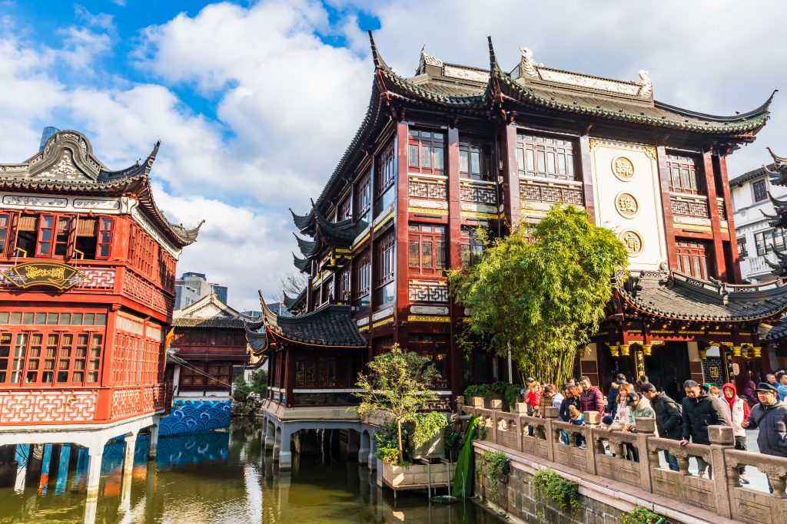

A China é uma das civilizações mais antigas do mundo, com mais de 5 mil anos de história. Ao longo dos séculos, o país foi governado por grandes dinastias que contribuíram para avanços na filosofia, ciência, arte e tecnologia. A unificação da China em 221 a.C marcou o início de um império forte e organizado, responsável por obras históricas como a Grande Muralha. Durante a Dinastia Tang, a cultura e o comércio cresceram intensamente, tornando a China uma das maiores potências da época. Em 1949, foi fundada a República Popular da China, iniciando uma nova fase de modernização. Atualmente, o país é reconhecido mundialmente por sua influência econômica, tecnológica e cultural.